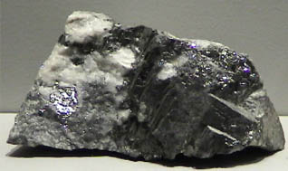

Tellurium
Tellurium is a semiconductor with electrical conductivity about two orders of magnitude lower than the metals. Its chemistry is similar to that of sulfur, except that it is more metallic in character.
Tellurium is found in the mineral nagyagite, a sulfide, along with lead, iron, antimony, and gold. Tellurium combines with gold to form krennerite and calaverite, both with the empirical formula AuTe2. These two minerals are said to be dimorphs of each other. Silver bonds to tellurium in the mineral hessite, Ag2Te.
|

|
This sample of tellurium is displayed in the Smithsonian Museum of Natural History. The sample is about 6x4 cm and is from the De La Mar mine, Delamar, Nevada.
|
|
Index
Periodic Table
Chemistry concepts
Reference
Pauling
Ch. 14 |